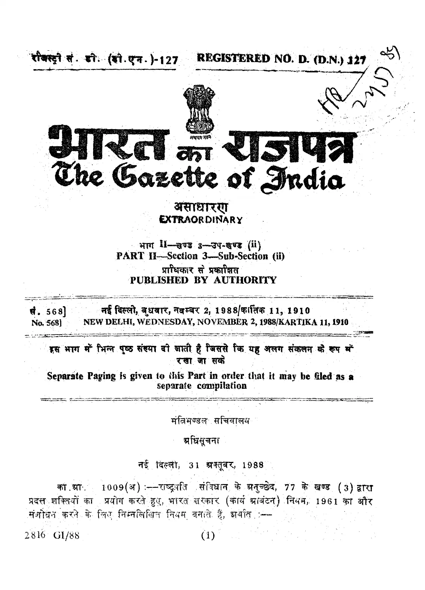
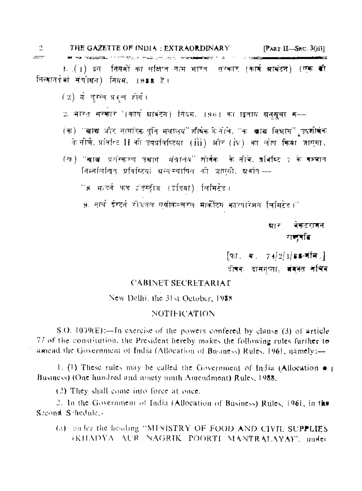
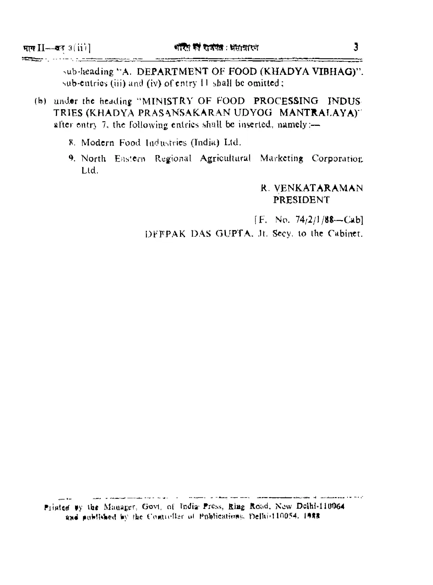

Amendment #199 (S.O. 1009(E), 1988)
2 changes: 0 to the First Schedule, 2 to the Second Schedule. 1 applied1 not applied
The order, page by page
Page 1 of 4

Page 2 of 4

1Schedule 2 › MINISTRY OF FOOD AND CIVIL SUPPLIES › DEPARTMENT OF FOOD › entry 11 › item iv; Schedule 2 › MINISTRY OF FOOD AND CIVIL SUPPLIES › DEPARTMENT OF FOOD › entry 11 › item iv
not applied (the change could not be placed in the Rules as read; see How this document was read)
Page 3 of 4

2after Schedule 2 › MINISTRY OF FOOD PROCESSING INDUSTRIES › entry 7
- 8. Modern Food Industries (India) Ltd.
- 9. North Eastern Regional Agricultural Marketing Corporation. Ltd.
applied at schedule 2 › ministry MINISTRY OF FOOD PROCESSING IN- DUSTRIES › entry 8 in the Rules after #199
Page 4 of 4
How this document was read
Known issues
| Change | Issue | Known as |
|---|---|---|
| 1 | change 1: no item iv under schedule 2 › ministry MINISTRY OF FOOD AND CIVIL SUPPLIES (KHADYA AUR NAGRIK POORTI MANTRA- LAYA) › department A › entry 11 | Items |
From the Government of India (Allocation of Business) Rules, 1961 and their amendments, as published by the Cabinet Secretariat (cabsec.gov.in), read by orgpedia. The readings of the older scanned gazettes have known gaps.